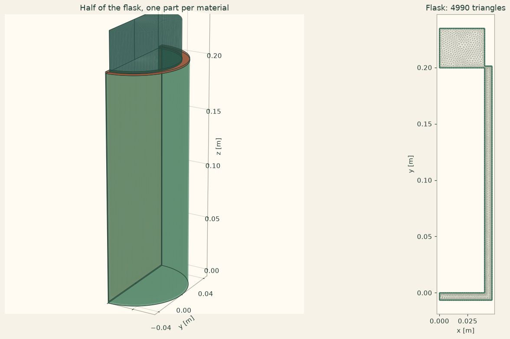

Docs › Examples › Natural convection cooling of a vacuum flask
Heat conduction · 2D-axisymmetric
Natural convection cooling of a vacuum flask
How much heat a vacuum flask of hot coffee loses per hour, and through which parts: glass vessel, vacuum gap, steel shell, shoulder ring and stopper.
Run locally with OneSimulation. The example downloads are free. Running them requires an activated runtime. OneSimulation 1.0 · CPython 3.13 on macOS (Apple Silicon), Ubuntu 22.04 (x86-64), and Windows x64. Installation and activation · View pilot plans. Scope of the reference checks.

What it computes
OneSimulation solves the steady axisymmetric heat conduction on revolved quadratic elements in the meridian section of five material regions read from STEP, meshed one by one and joined node on node; the vacuum acts through its linearised radiation conductivity, and free convection and radiation outside enter as heat transfer coefficients from the textbook correlations. The script that builds the STEP files comes with the notebook.
What it checks
The flask loses 4.65 W, so the coffee cools by about 4 K per hour; heat in and out balance to 1e-5 %, the finer mesh changes the cooling power by 0.1 %, and the heat flux across the vacuum at mid-height lies 2.8 % from the thermal resistance estimate, while stopper and shoulder ring carry more than two thirds of the loss.
Geometry
The notebook starts at the import of the CAD files vacuum_flask_cooling.step, vacuum_flask_cooling_glass.step, vacuum_flask_cooling_neck.step, vacuum_flask_cooling_shell.step, vacuum_flask_cooling_stopper.step, vacuum_flask_cooling_vacuum.step: STEP (AP242), readable by any CAD program, with the names of the faces that the boundary conditions use. Put them next to the notebook.


The geometry script
The script vacuum_flask_cooling_geometry.py builds the geometry with the CAD objects of OneSimulation and writes the files. Change a dimension there, run it, and run the notebook again.
"""Geometry of the OneSimulation example "Natural convection cooling of a vacuum flask".
Builds a vacuum flask holding coffee (radius 40 mm, 200 mm high) with the CAD objects of
OneSimulation: an inner glass vessel (1.5 mm), a vacuum gap (4 mm), an outer steel shell (1 mm), a
plastic shoulder ring (1.5 mm, the part neck) that joins them at the top and a plastic stopper (35 mm thick). Every
part is half a solid of revolution about the z axis, drawn as its meridian profile; the cut with
the plane y = 0 is the meridian section. Writes
- vacuum_flask_cooling.step: the flask without the coffee, with the face groups coffee (the
surfaces wetted by the coffee), side (outer side of the shell), top (neck ring and stopper in
the air), base (standing on the floor) and axis,
- vacuum_flask_cooling_glass.step, _vacuum.step, _shell.step, _neck.step, _stopper.step: the
material regions; their faces on the outside of the flask carry the same names, the faces
between two regions are called inside.
"""
import numpy as np
from onesim.cad.d2 import Profile
from onesim.cad.d3 import Revolution
mm = 1e-3
r1, r2, r3, r4 = 40 * mm, 41.5 * mm, 45.5 * mm, 46.5 * mm
z1, z2, z3, height, neck, plug = (
-1.5 * mm,
-5.5 * mm,
-6.5 * mm,
200 * mm,
201.5 * mm,
235 * mm,
)
revolved = lambda points, names=None: Revolution(
profile=Profile.polygon(points, names), angle=np.pi
).rotated((0, 0, 1), -np.pi / 2)
regions = {
"glass": (
[(0, z1), (r2, z1), (r2, height), (r1, height), (r1, 0), (0, 0)],
["inside", "inside", "inside", "coffee", "coffee", "axis"],
),
"vacuum": (
[(0, z2), (r3, z2), (r3, height), (r2, height), (r2, z1), (0, z1)],
["inside", "inside", "inside", "inside", "inside", "axis"],
),
"shell": (
[(0, z3), (r4, z3), (r4, height), (r3, height), (r3, z2), (0, z2)],
["base", "side", "inside", "inside", "inside", "axis"],
),
"neck": (
[(r1, height), (r4, height), (r4, neck), (r1, neck)],
["inside", "side", "top", "inside"],
),
"stopper": (
[(0, height), (r1, height), (r1, neck), (r1, plug), (0, plug)],
["coffee", "inside", "top", "top", "axis"],
),
}
for name, (points, names) in regions.items():
revolved(points, names).save(f"vacuum_flask_cooling_{name}.step")
revolved(
[
(0, z3),
(r4, z3),
(r4, neck),
(r1, neck),
(r1, plug),
(0, plug),
(0, height),
(r1, height),
(r1, 0),
(0, 0),
],
["base", "side", "top", "top", "top", "axis", "coffee", "coffee", "coffee", "axis"],
).save("vacuum_flask_cooling.step")The notebook
The complete notebook, cell by cell. Run it to produce the figures and the comparison printout.
A vacuum flask holds coffee at 90 °C (radius 40 mm, 200 mm high). The coffee sits in a glass vessel (1.5 mm, \(k=1.0\) W/(m K)) surrounded by an evacuated gap (4 mm) and a stainless steel shell (1 mm, \(k=16\) W/(m K)); a plastic shoulder ring (1.5 mm) closes the gap at the top, and a plastic stopper (35 mm, \(k=0.2\) W/(m K)) closes the flask. Across the vacuum heat passes only by radiation between the silvered walls (\(\varepsilon=0.05\)); linearised about the mean gap temperature it acts like a conductivity
Steady conduction \(\nabla\cdot(k\nabla T)=0\) holds in all solids. The coffee is well mixed and holds its temperature over the hour considered; outside, free convection and radiation carry the heat to the room at 25 °C, \(q''=(h_c+h_r)(T-T_\infty)\), with \(h_c\) from the Churchill-Chu correlation for the vertical side and from \(\overline{Nu}=0.54\,Ra^{1/4}\) for the hot top (F. P. Incropera et al., Fundamentals of Heat and Mass Transfer, Eqs. 9.26 and 9.30) and \(h_r=4\varepsilon\sigma T_m^3\) (steel \(\varepsilon=0.15\), plastic \(\varepsilon=0.9\)).
The geometry comes from the CAD files vacuum_flask_cooling*.step, written by vacuum_flask_cooling_geometry.py with the CAD objects of OneSimulation: the flask and each material region.
| face | condition |
|---|---|
coffee | \(T=90\) °C |
side, top | \(q''=(h_c+h_r)(T-T_\infty)\) |
base | insulated (standing on the floor) |
start (the cut through the axis) | symmetry |
Reference. A thermal resistance estimate: the cylindrical wall layers in series with the outer film, \(R_\mathrm{side}=\big[\sum\ln(r_{i+1}/r_i)/k_i\big]/(2\pi H)+1/(2\pi r_4Hh_\mathrm{side})\), and the stopper as a slab, \(R_\mathrm{top}=(t/k_p+1/h_\mathrm{top})/(\pi r_1^2)\); it leaves out the shoulder ring that bridges the vacuum. In the steady state the heat leaving the coffee must leave the flask.
import numpy as np
from onesim.cad.exchange import load
from onesim.materials import IsotropicSolid, regionwise
from onesim.meshing import TriangularMesher, joined
from onesim.numerics import Numerics
from onesim.numerics.fem import FiniteElement, Lagrange, RevolvedH1SpaceFactory
from onesim.numerics.linear import SparseDirect
from onesim.physics.heat_transfer import (
ConvectiveHeatFlux,
FixedTemperature,
HeatConduction,
HeatFlux,
)
from onesim.simulation import Problem, Simulation
from onesim.visualization import plots, theme
theme.set()Geometry and meshes
Every part is cut in the plane through the axis. The material regions are meshed one by one with all their edges divided into equal pieces of the same size, so joined merges them node on node into one mesh of the flask; two meshes, with 0.5 mm and 0.25 mm pieces, form the mesh study.
names = ("glass", "vacuum", "shell", "neck", "stopper")
flask = load("vacuum_flask_cooling.step").section((0, 1, 0))
regions = {
name: load(f"vacuum_flask_cooling_{name}.step").section((0, 1, 0)) for name in names
}
faces = flask.boundaries
meshes = {
size: joined(
[
TriangularMesher(
target_size=2e-3,
hard_sizes={edge.id: size for edge in region.edges},
grading=0.25,
).generate(region)
for region in regions.values()
],
geometry=flask,
)
for size in (5e-4, 2.5e-4)
}
fig = plots.figure(1, 2, size=(13, 7))
plots.geometry(
[load(f"vacuum_flask_cooling_{name}.step").named(name) for name in names],
labels=False,
camera=plots.Camera(elevation=20, azimuth=-60),
title="Half of the flask, one part per material",
ax=fig[0],
)
plots.mesh(
meshes[5e-4],
groups=("all",),
legend=False,
title=f"Flask: {meshes[5e-4].cell_count} triangles",
ax=fig[1],
)
plots.show()Conduction model with free-convection coefficients
The coefficients are evaluated for a surface 3 K above the room (air at 27 °C), the vacuum conductivity at the mean gap temperature. regionwise lays the conductivities on the regions, and the revolved space makes the planar elements axisymmetric.
coffee, ambient, gravity, sigma = 363.15, 298.15, 9.81, 5.670e-8
r1, r2, r3, r4, base, height, stopper = (
0.040,
0.0415,
0.0455,
0.0465,
-6.5e-3,
regions["shell"].size[1],
0.035,
)
k_glass, k_steel, k_plastic = 1.0, 16.0, 0.2
k_vacuum = 4 * sigma * 330.0**3 * (r3 - r2) / (1 / 0.05 + 1 / 0.05 - 1)
air_k, air_nu, air_alpha = 0.0262, 1.59e-5, 2.25e-5
rayleigh = lambda length: gravity / 300.15 * 3.0 * length**3 / (air_nu * air_alpha)
h_side_c = (
air_k
/ height
* (
0.68
+ 0.670
* rayleigh(height) ** 0.25
/ (1 + (0.492 * air_alpha / air_nu) ** (9 / 16)) ** (4 / 9)
)
)
h_top_c = air_k / (r1 / 2) * 0.54 * rayleigh(r1 / 2) ** 0.25
h_side, h_top = (
h_side_c + 4 * 0.15 * sigma * 300.15**3,
h_top_c + 4 * 0.9 * sigma * 300.15**3,
)
material = IsotropicSolid(
density=1.0,
specific_heat_capacity=1.0,
youngs_modulus=1.0,
poisson_ratio=0.3,
thermal_expansion_coefficient=0.0,
thermal_conductivity=regionwise(
(
(regions["glass"], k_glass),
(regions["vacuum"], k_vacuum),
(regions["shell"], k_steel),
(regions["neck"], k_plastic),
),
default=k_plastic,
unit="W/m/K",
),
)
heat = HeatConduction(domain=flask.domain(), material=material)
problem = Problem(
name="Vacuum flask, conduction",
geometry=flask,
physics=(heat,),
boundary_conditions=(
FixedTemperature(physics=heat, boundary=faces.coffee, value=coffee),
ConvectiveHeatFlux(
physics=heat,
boundary=faces.side,
heat_transfer_coefficient=h_side,
ambient_temperature=ambient,
),
ConvectiveHeatFlux(
physics=heat,
boundary=faces.top,
heat_transfer_coefficient=h_top,
ambient_temperature=ambient,
),
HeatFlux(physics=heat, boundary=faces.base | faces.start, value=0.0),
),
)
conduction = {
size: Simulation(
problem=problem,
mesh=mesh,
numerics=Numerics(
spatial=FiniteElement(
element=Lagrange(order=2), provider=RevolvedH1SpaceFactory()
),
linear_solver=SparseDirect(),
),
)
.solve_stationary()
.field(heat.temperature)
for size, mesh in meshes.items()
}Cooling power
The fluxes through the named faces are the full-revolution heat flows in W. The resistance estimate covers the radial path only, while the steel shell also spreads the heat that reaches it through the base and near the top; the heat flux across the vacuum at mid-height, read from the temperature gradient, is the like-for-like comparison.
side_1d = (coffee - ambient) / (
(np.log(r2 / r1) / k_glass + np.log(r3 / r2) / k_vacuum + np.log(r4 / r3) / k_steel)
/ (2 * np.pi * height)
+ 1 / (2 * np.pi * r4 * height * h_side)
)
top_1d = (coffee - ambient) * np.pi * r1**2 / (stopper / k_plastic + 1 / h_top)
mass = 1000.0 * np.pi * r1**2 * 0.2
print(
f"h_side = {h_side_c:.2f} + {h_side - h_side_c:.2f} (radiation), h_top = {h_top_c:.2f} + {h_top - h_top_c:.2f} W/(m² K); "
f"vacuum conductivity {1e3 * k_vacuum:.3f} mW/(m K)"
)
print("mesh triangles from the coffee [W] side [W] top [W] balance")
for size, temperature in conduction.items():
out_side, out_top, taken = (
temperature.boundary_flux(faces.side),
temperature.boundary_flux(faces.top),
-temperature.boundary_flux(faces.coffee),
)
print(
f"{1e3 * size:.2f} mm {meshes[size].cell_count:11d} {taken:21.4f} {out_side:10.4f} {out_top:9.4f} "
f"{100 * (out_side + out_top - taken) / taken:+8.3f} %"
)
temperature = conduction[2.5e-4]
out_side, out_top = temperature.boundary_flux(faces.side), temperature.boundary_flux(
faces.top
)
print(
f"resistance estimate: side {side_1d:.4f} W (simulation {100 * (out_side / side_1d - 1):+.1f} %), stopper {top_1d:.4f} W "
f"(simulation top incl. shoulder ring {100 * (out_top / top_1d - 1):+.1f} %)"
)
print(
f"cooling power {out_side + out_top:.3f} W; the coffee ({mass:.3f} kg) cools by {3600 * (out_side + out_top) / (mass * 4190):.2f} K per hour"
)
surface = temperature.evaluate(
np.column_stack((np.full(50, r4 - 1e-7), np.linspace(0.0, 0.2, 50)))
).ravel()
print(
f"outer shell {surface.mean() - ambient:.2f} K above the room on average (the coefficients assumed 3 K)"
)
flux_1d = side_1d / (2 * np.pi * r3 * height)
flux = -k_vacuum * np.ravel(temperature.gradient([[r3 - 1e-4, 0.1]]))[0]
print(
f"heat flux across the vacuum at mid-height: {flux:.3f} W/m², resistance estimate {flux_1d:.3f} W/m² ({100 * (flux / flux_1d - 1):+.1f} %)"
)Figure
Temperature in the whole flask wall, near the top, where stopper and shoulder ring carry most of the heat, and through the wall at mid-height, where the vacuum takes almost the whole drop.
wall = np.linspace(r1 + 1e-7, r4 - 1e-7, 300)
fig = plots.figure(layout=[["top", "whole"], ["wall", "whole"]], size=(14, 12))
plots.surface(
temperature,
component=lambda T, position: T - 273.15,
limits=(25.0, 90.0),
contours=12,
subdivisions=2,
label="T [°C]",
xlabel="r [m]",
ylabel="z [m]",
xlimits=(0.0, 0.05),
ylimits=(0.17, 0.24),
title="Flask top: stopper and shoulder ring",
ax=fig["top"],
)
plots.surface(
temperature,
component=lambda T, position: T - 273.15,
limits=(25.0, 90.0),
contours=12,
subdivisions=2,
label="T [°C]",
xlabel="r [m]",
ylabel="z [m]",
title="Whole flask",
ax=fig["whole"],
)
plots.line(
1e3 * wall,
{
"simulation, mid-height": temperature.evaluate(
np.column_stack((wall, np.full_like(wall, 0.1)))
).ravel()
- 273.15
},
vlines={"glass | vacuum": 1e3 * r2, "vacuum | steel": 1e3 * r3},
xlabel="radius [mm]",
ylabel="temperature [°C]",
title="Through the wall: the vacuum takes the drop",
legend="upper right",
ax=fig["wall"],
)
plots.show()Going further
Lose the vacuum (air in the gap) or the silvering (\(\varepsilon=0.9\)) in the gap conductivity and watch the cooling power rise tenfold; make the stopper thinner in vacuum_flask_cooling_geometry.py; or let the coffee cool in time with its heat capacity.